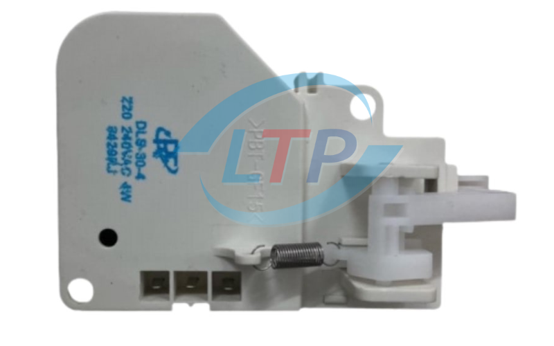

Máy giặt Toshiba, với công nghệ tiên tiến và tính năng nổi bật, là sự lựa chọn phổ biến trong nhiều gia đình. Tuy nhiên, trong quá trình sử dụng, máy có thể gặp phải các mã lỗi, trong đó lỗi E25 là một vấn đề thường gặp. Bài viết này sẽ giúp bạn hiểu rõ hơn về lỗi E25, nguyên nhân gây ra và cách khắc phục hiệu quả.
I. Nguyên Nhân Gây Ra Lỗi E25 Trên Máy Giặt Toshiba
Lỗi E25 trên máy giặt Toshiba có thể xuất phát từ nhiều nguyên nhân khác nhau. Dưới đây là những nguyên nhân phổ biến dẫn đến lỗi này:
1.Đường Ống Dẫn Nước Bị Tắc: Khi ống dẫn nước bị tắc nghẽn bởi cặn bẩn hoặc rác thải, lượng nước cung cấp vào máy giặt bị giảm hoặc gián đoạn, làm cho cảm biến áp lực nước không hoạt động chính xác và dẫn đến mã lỗi E25.
Ống dẫn nước máy giặt
2.Cảm Biến Áp Lực Nước ( phao) Bị Hỏng: Cảm biến áp lực nước có nhiệm vụ đo lường lượng nước trong máy giặt. Nếu cảm biến gặp sự cố hoặc hoạt động không ổn định, máy giặt sẽ không nhận diện được lượng nước chính xác, gây ra lỗi E25.
Phao ( cảm biến mực nước) máy giặt
3. Van Nước Không Hoạt Động Đúng Cách: Van nước điều chỉnh lượng nước vào máy. Nếu van không hoạt động bình thường, máy giặt không thể kiểm soát lượng nước, dẫn đến lỗi E25.
Van cấp nước máy giặt
4.Nắp Cửa Máy Giặt Bị Kẹt Hoặc Cảm Biến Cửa Hỏng: Nếu nắp máy giặt không đóng chặt, bị chênh hoặc kẹt, máy giặt không nhận được tín hiệu từ cảm biến cửa, dẫn đến lỗi E25.

Công tắc cửa máy giặt
5.Board Mạch Gặp Sự Cố: Board mạch điều khiển và phát tín hiệu cho các bộ phận máy giặt hoạt động. Nếu board mạch bị hỏng, máy giặt có thể xuất hiện lỗi E25.

Board máy giặt
II. Cách Khắc Phục Lỗi E25 Trên Máy Giặt Toshiba
Dưới đây là hướng dẫn chi tiết để khắc phục lỗi E25:
1.Đường Ống Dẫn Nước Bị Tắc
- Cách Khắc Phục:
Kiểm tra và làm sạch ống dẫn nước nếu bị tắc nghẽn bởi cặn bẩn hoặc rác thải.
Đảm bảo nước chảy vào máy giặt thông suốt. Khởi động lại máy và kiểm tra xem lỗi E25 đã được khắc phục chưa.
2. Cảm Biến Áp Lực Nước Bị Hỏng
- Cách Khắc Phục:
Kiểm tra cảm biến áp lực nước để đảm bảo nó hoạt động bình thường. Nếu cảm biến hỏng, hãy thay thế bằng cảm biến mới.
Nếu cần, hãy liên hệ với dịch vụ kỹ thuật chuyên nghiệp để thay thế.
3.Van Nước Không Hoạt Động Đúng Cách
- Cách Khắc Phục:
Kiểm tra van nước để đảm bảo nó không bị hỏng hoặc kẹt. Vệ sinh van hoặc thay thế nếu cần.
Khởi động lại máy giặt và kiểm tra xem lỗi E25 đã biến mất chưa.
4.Nắp Cửa Máy Giặt Bị Kẹt Hoặc Cảm Biến Cửa Bị Hỏng
- Cách Khắc Phục:
Kiểm tra nắp máy giặt để đảm bảo nó đóng chặt và không bị kẹt. Loại bỏ vật cản nếu có.
Thay thế cảm biến cửa nếu nó bị hỏng. Sau đó, khởi động lại máy để đảm bảo lỗi E25 không còn xuất hiện.
5.Board Mạch Gặp Sự Cố
- Cách Khắc Phục:
Kiểm tra board mạch để xác định xem có dấu hiệu hư hỏng hay không. Nếu có, liên hệ với trung tâm bảo hành hoặc kỹ thuật viên để thay thế.
Tránh tự sửa chữa board mạch nếu không có kinh nghiệm.
Tìm hiểu thêm lỗi máy giặt Toshiba: -Máy Giặt Toshiba Lỗi E73? Hãy Đọc Ngay Hướng Dẫn Sửa Chữa Chi Tiết
- Máy Giặt Toshiba Báo Lỗi E6- Nguyên Nhân Và Hướng Khắc Phục
III. Lợi Ích Khi Sử Dụng Dịch Vụ Sửa Máy Giặt Toshiba Chuyên Nghiệp
Hoàng Gia Điện Lạnh chuyên sửa máy giặt
Khi máy giặt Toshiba của bạn gặp sự cố, dịch vụ sửa chữa chuyên nghiệp mang lại nhiều lợi ích:
- Tối Ưu Chi Phí: Đội ngũ kỹ thuật viên giàu kinh nghiệm sẽ xác định chính xác lỗi và sửa chữa nhanh chóng, giúp bạn tránh chi phí phát sinh không cần thiết.
- Chuyên Môn Cao: Kỹ thuật viên có kinh nghiệm sẽ đảm bảo máy giặt được sửa chữa đúng cách và khôi phục hiệu suất hoạt động.
- Bảo Hành Dịch Vụ: Chúng tôi cam kết bảo hành sau khi sửa chữa để bạn yên tâm về chất lượng dịch vụ.
IV. Dịch Vụ Sửa Chữa Máy Giặt Toshiba Tại Công Ty Nhiệt Lạnh Hoàng Gia Điện Lạnh
Tại Công Ty Nhiệt Lạnh Hoàng Gia Điện Lạnh, chúng tôi cung cấp dịch vụ sửa chữa máy giặt Toshiba chuyên nghiệp và hiệu quả:
- Giới Thiệu Dịch Vụ: Chúng tôi cung cấp dịch vụ sửa chữa toàn diện cho máy giặt Toshiba, từ xác định nguyên nhân lỗi đến khắc phục và bảo trì.
- Cam Kết Chất Lượng: Chúng tôi sử dụng linh kiện chính hãng và công nghệ sửa chữa tiên tiến, đảm bảo chất lượng dịch vụ và thời gian sửa chữa nhanh chóng.
- Bảo Hành Sau Sửa Chữa: Dịch vụ bảo hành của chúng tôi đảm bảo hỗ trợ miễn phí nếu có vấn đề phát sinh sau sửa chữa.
Quy Trình Sửa Chữa Máy Giặt:
- Tiếp nhận yêu cầu và khảo sát.
- Chẩn đoán lỗi và thông báo phương án khắc phục.
- Tiến hành sửa chữa với linh kiện chất lượng.
- Kiểm tra và bàn giao máy giặt.
- Hỗ trợ và bảo hành.
V. Câu Hỏi Thường Gặp Về Lỗi E25
1.Lỗi E25 Có Gây Hại Gì Cho Máy Giặt Không?
Lỗi E25 thường không gây hại nghiêm trọng nếu được xử lý kịp thời. Tuy nhiên, nếu không khắc phục, nó có thể dẫn đến hư hỏng thêm cho máy giặt.
2.Lỗi E25 Có Tự Khắc Phục Được Không?
Trong một số trường hợp, lỗi E25 có thể khắc phục được bằng cách kiểm tra và làm sạch đường ống dẫn nước hoặc cảm biến áp lực. Nếu không tự khắc phục được, liên hệ dịch vụ sửa chữa chuyên nghiệp là cần thiết.
3.Thời Gian Sửa Chữa Lỗi E25 Là Bao Lâu?
Thời gian sửa chữa lỗi E25 thường từ 1 đến 2 giờ, tùy thuộc vào mức độ phức tạp của lỗi.
4.Ngoài Lỗi E25, Công Ty Hoàng Gia Điện Lạnh Còn Sửa Những Lỗi Gì?
- Máy giặt rung lắc và kêu to bất thường.
- Dù ở chế độ xả tràn nhưng nước không chảy ra khỏi ống xả.
- Kết thúc quá trình giặt nhưng máy không tự động tắt nguồn.
- Thời gian xả nước giặt quá lâu.
- Máy giặt không vào nước.
- Máy giặt quần áo không sạch.
- Quần áo còn vương những hạt bột giặt li ti.
- Quá trình bơm nước vào máy giặt yếu.
- Máy giặt không xả nước.
- Máy giặt không vắt nước.
- Máy giặt mất nguồn.
Thông Tin Liên Hệ
Để nhận sự hỗ trợ nhanh chóng từ Công Ty Nhiệt Lạnh Hoàng Gia Điện Lạnh, vui lòng liên hệ với chúng tôi qua:
-
Địa chỉ: 49 Lưu Chí Hiếu, P. Rạch Dừa, TP. Vũng Tàu
- Số điện thoại: +84.918.092.848
- Email: hoanggiadienlanh68@gmail.com
- Giờ làm việc: 8h - 17h (Thứ Hai đến Thứ Bảy), Nghỉ Chủ Nhật
Hy vọng rằng thông tin trên sẽ giúp bạn khắc phục lỗi E25 trên máy giặt Toshiba một cách hiệu quả. Nếu có bất kỳ vấn đề gì cần hỗ trợ thêm, đừng ngần ngại liên hệ với chúng tôi để được tư vấn và sửa chữa nhanh chóng!


.png)


.png)